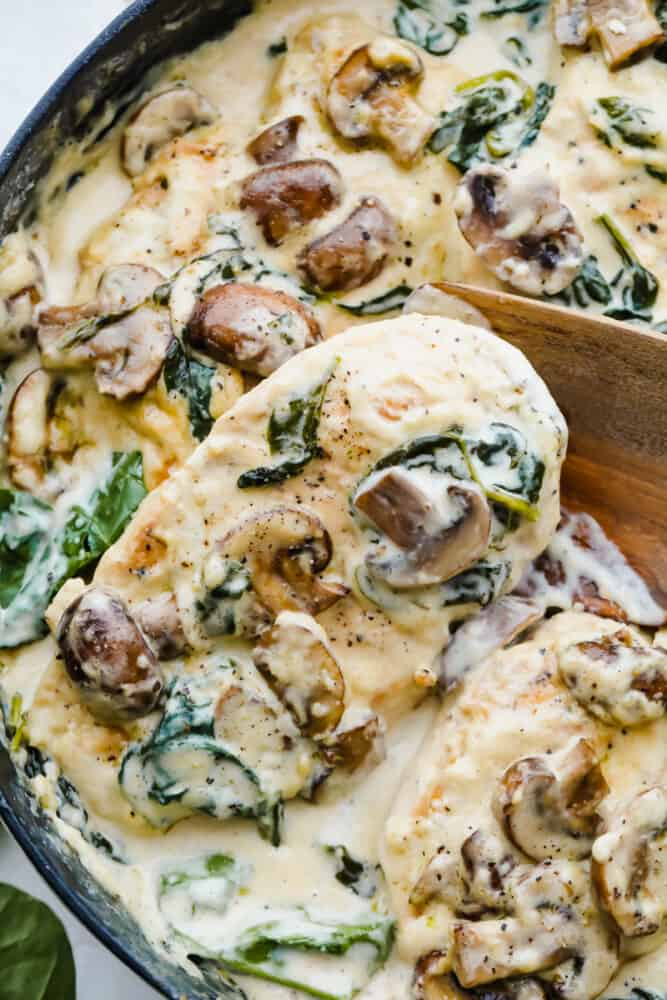

Creamy Parmesan Chicken

Ingredients
- 4 boneless skinless chicken breasts, thinly sliced
- 2 Tbsp Olive oil
- Salt/Pepper
- 8 ounces sliced mushrooms
Sauce:
- ¼ cup butter
- 2 garlic cloves, minced
- 1 Tbsp flour
- ½ cup chicken broth
- 1 cup heavy cream or half and half
- ½ cup grated parmesan cheese
- ½ tsp garlic powder
- ¼ tsp pepper
- ½ tsp salt
- 1 cup spinach, chopped
Instructions
- In a large skillet add olive oil and cook the chicken on medium high heat for 3-5 minutes on each side or until brown on each side and cooked until no longer pink in center.
- Remove chicken and set aside on a plate.
- Add the sliced mushrooms and cook for a few minutes until tender. Remove and set aside.
Sauce:
- Add the butter and garlic and cook until tender.
- Whisk in the flour until it thickens.
- Whisk in chicken broth, heavy cream, parmesan cheese, garlic powder, pepper and salt.
- Add the spinach and let simmer until it starts to thicken and spinach wilts.
- Add the chicken and mushrooms back to the sauce and serve over pasta if desired.